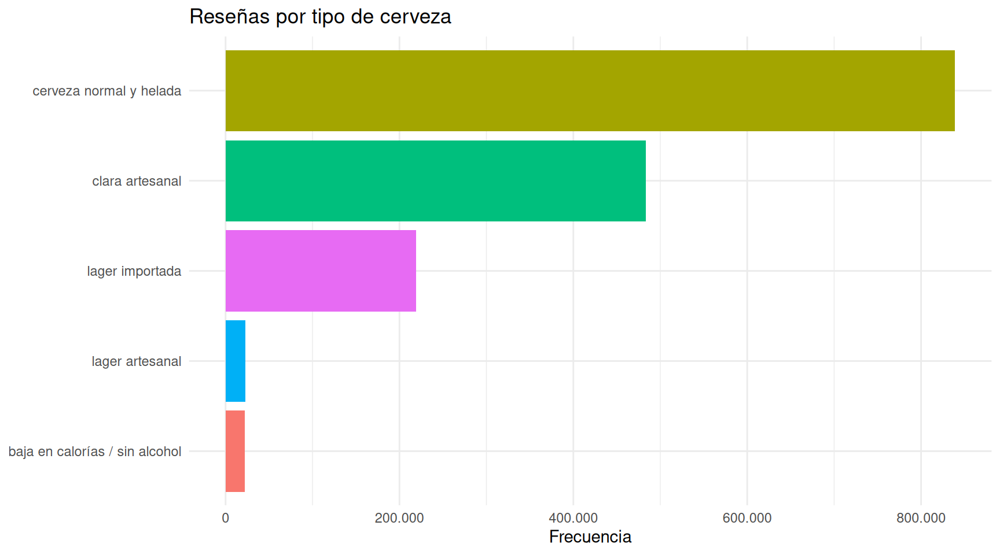
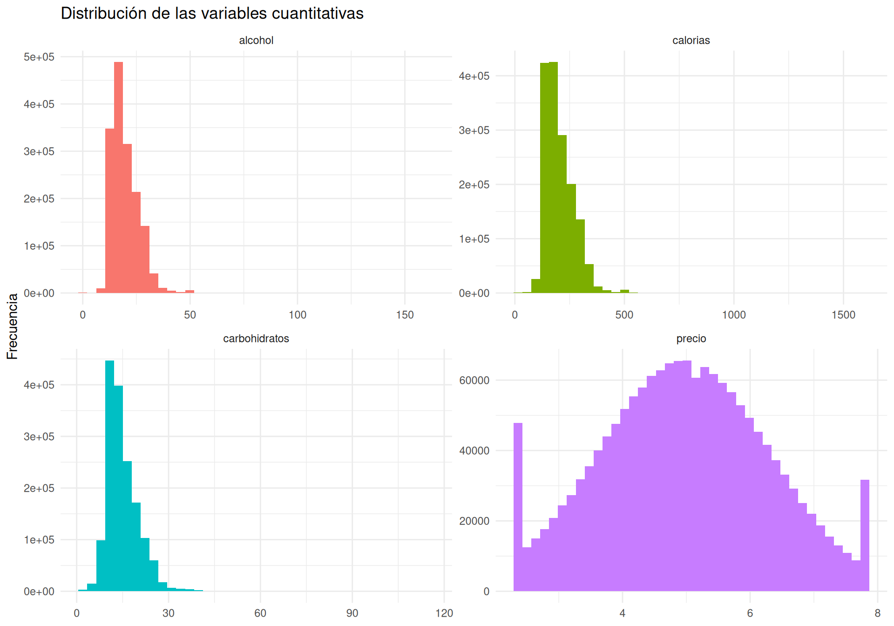

Describir las características comerciales, nutricionales, geográficas
y de valoración contenidas en beer2.csv, mediante tablas de
frecuencias, indicadores estadísticos y gráficos apropiados para cada
tipo de variable.
revision <- data.frame(
indicador = c("Registros", "Variables", "Valores faltantes", "Cervezas diferentes", "Marcas diferentes"),
resultado = c(
nrow(beer2),
ncol(beer2),
sum(is.na(beer2)),
n_distinct(beer2$id),
n_distinct(beer2$marca)
)
)
kable(revision, format.args = list(big.mark = ".", decimal.mark = ","))| indicador | resultado |
|---|---|
| Registros | 1.586.614 |
| Variables | 15 |
| Valores faltantes | 0 |
| Cervezas diferentes | 66.055 |
| Marcas diferentes | 5.743 |
La unidad de observación es una reseña. En
consecuencia, id, marca y
nombre_cerveza pueden repetirse cuando una cerveza ha
recibido varias valoraciones. El identificador id no se
utiliza para calcular indicadores estadísticos.
frecuencia_tipo <- tabla_frecuencias(beer2, tipo)
kable(frecuencia_tipo, col.names = c("Tipo", "Frecuencia", "Porcentaje (%)", "Acumulado (%)"), format.args = list(big.mark = ".", decimal.mark = ","))| Tipo | Frecuencia | Porcentaje (%) | Acumulado (%) |
|---|---|---|---|
| cerveza normal y helada | 839.088 | 52,89 | 52,89 |
| clara artesanal | 483.464 | 30,47 | 83,36 |
| lager importada | 219.194 | 13,82 | 97,18 |
| lager artesanal | 22.725 | 1,43 | 98,61 |
| baja en calorías / sin alcohol | 22.143 | 1,40 | 100,01 |
ggplot(frecuencia_tipo, aes(x = reorder(tipo, frecuencia), y = frecuencia, fill = tipo)) +
geom_col(show.legend = FALSE) +
coord_flip() +
scale_y_continuous(labels = scales::label_number(big.mark = ".")) +
labs(title = "Reseñas por tipo de cerveza", x = NULL, y = "Frecuencia") +
theme_minimal()
El tipo más frecuente es cerveza normal y helada, con 839.088 reseñas (52.89%).
frecuencia_origen <- tabla_frecuencias(beer2, origen)
kable(frecuencia_origen, col.names = c("Origen", "Frecuencia", "Porcentaje (%)", "Acumulado (%)"), format.args = list(big.mark = ".", decimal.mark = ","))| Origen | Frecuencia | Porcentaje (%) | Acumulado (%) |
|---|---|---|---|
| importada | 1.412.449 | 89,02 | 89,02 |
| nacional | 174.165 | 10,98 | 100,00 |
La categoría modal de origen es importada, que representa 89.02% de las reseñas.
frecuencia_nacionalidad <- tabla_frecuencias(beer2, nacionalidad)
kable(frecuencia_nacionalidad, col.names = c("Nacionalidad", "Frecuencia", "Porcentaje (%)", "Acumulado (%)"), format.args = list(big.mark = ".", decimal.mark = ","))| Nacionalidad | Frecuencia | Porcentaje (%) | Acumulado (%) |
|---|---|---|---|
| Austria | 201.941 | 12,73 | 12,73 |
| Bélgica | 188.677 | 11,89 | 24,62 |
| Francia | 181.574 | 11,44 | 36,06 |
| Estados Unidos | 174.165 | 10,98 | 47,04 |
| Inglaterra | 162.644 | 10,25 | 57,29 |
| Canadá | 159.508 | 10,05 | 67,34 |
| Japón | 155.273 | 9,79 | 77,13 |
| Alemania | 121.684 | 7,67 | 84,80 |
| Irlanda | 120.742 | 7,61 | 92,41 |
| República Checa | 120.406 | 7,59 | 100,00 |
La nacionalidad más frecuente es Austria. Esta variable fue simulada y, por tanto, su interpretación se limita a la estructura construida para el ejercicio.
frecuencia_marca <- tabla_frecuencias(beer2, marca)
kable(head(frecuencia_marca, 10), col.names = c("Marca", "Frecuencia", "Porcentaje (%)", "Acumulado (%)"), format.args = list(big.mark = ".", decimal.mark = ","))| Marca | Frecuencia | Porcentaje (%) | Acumulado (%) |
|---|---|---|---|
| Boston Beer Company (Samuel Adams) | 39.444 | 2,49 | 2,49 |
| Dogfish Head Brewery | 33.839 | 2,13 | 4,62 |
| Stone Brewing Co. | 33.066 | 2,08 | 6,70 |
| Sierra Nevada Brewing Co. | 28.751 | 1,81 | 8,51 |
| Bell’s Brewery, Inc. | 25.191 | 1,59 | 10,10 |
| Rogue Ales | 24.083 | 1,52 | 11,62 |
| Founders Brewing Company | 20.004 | 1,26 | 12,88 |
| Victory Brewing Company | 19.479 | 1,23 | 14,11 |
| Lagunitas Brewing Company | 16.837 | 1,06 | 15,17 |
| Avery Brewing Company | 16.107 | 1,02 | 16,19 |
Debido al gran número de marcas, se presentan solamente las diez con más reseñas. La marca con mayor frecuencia es Boston Beer Company (Samuel Adams).
Las puntuaciones de calificación, aroma, apariencia, paladar y sabor son variables ordinales. Se resumen mediante sus distribuciones y la mediana; la media se incluye como referencia comparativa por tratarse de puntuaciones numéricas con intervalos uniformes.
variables_valoracion <- c("calificacion", "aroma", "apariencia", "paladar", "sabor")
resumen_valoraciones <- lapply(variables_valoracion, function(v) {
x <- beer2[[v]]
data.frame(
variable = v,
mínimo = min(x),
mediana = median(x),
moda = as.numeric(moda(x)),
media = mean(x),
máximo = max(x)
)
}) |>
bind_rows() |>
mutate(across(where(is.numeric), ~ round(.x, 2)))
kable(resumen_valoraciones, col.names = c("Variable", "Mínimo", "Mediana", "Moda", "Media", "Máximo"))| Variable | Mínimo | Mediana | Moda | Media | Máximo |
|---|---|---|---|---|---|
| calificacion | 0 | 4 | 4 | 3.82 | 5 |
| aroma | 1 | 4 | 4 | 3.74 | 5 |
| apariencia | 0 | 4 | 4 | 3.84 | 5 |
| paladar | 1 | 4 | 4 | 3.74 | 5 |
| sabor | 1 | 4 | 4 | 3.79 | 5 |
tabla_calificacion <- tabla_frecuencias(beer2, calificacion)
kable(tabla_calificacion, col.names = c("Calificación general", "Frecuencia", "Porcentaje (%)", "Acumulado (%)"), format.args = list(big.mark = ".", decimal.mark = ","))| Calificación general | Frecuencia | Porcentaje (%) | Acumulado (%) |
|---|---|---|---|
| 4,0 | 582.764 | 36,73 | 36,73 |
| 4,5 | 324.385 | 20,45 | 57,18 |
| 3,5 | 301.817 | 19,02 | 76,20 |
| 3,0 | 165.644 | 10,44 | 86,64 |
| 5,0 | 91.320 | 5,76 | 92,40 |
| 2,5 | 58.523 | 3,69 | 96,09 |
| 2,0 | 38.225 | 2,41 | 98,50 |
| 1,5 | 12.975 | 0,82 | 99,32 |
| 1,0 | 10.954 | 0,69 | 100,01 |
| 0,0 | 7 | 0,00 | 100,01 |
La mediana de la calificación general es 4 y su nivel más frecuente es 4. Entre los cinco aspectos, la mayor media corresponde a apariencia.
variables_cuantitativas <- c("precio", "alcohol", "carbohidratos", "calorias")
resumen_cuantitativas <- lapply(variables_cuantitativas, function(v) {
x <- beer2[[v]]
data.frame(
variable = v,
mínimo = min(x),
q1 = quantile(x, 0.25),
mediana = median(x),
media = mean(x),
q3 = quantile(x, 0.75),
máximo = max(x),
desviación = sd(x),
cv_porcentaje = 100 * sd(x) / mean(x)
)
}) |>
bind_rows() |>
mutate(across(where(is.numeric), ~ round(.x, 2)))
kable(
resumen_cuantitativas,
col.names = c("Variable", "Mínimo", "Q1", "Mediana", "Media", "Q3", "Máximo", "Desviación", "CV (%)")
)| Variable | Mínimo | Q1 | Mediana | Media | Q3 | Máximo | Desviación | CV (%) | |
|---|---|---|---|---|---|---|---|---|---|
| 25%…1 | precio | 2.36 | 4.05 | 4.96 | 4.97 | 5.87 | 7.80 | 1.30 | 26.10 |
| 25%…2 | alcohol | 0.03 | 14.56 | 18.21 | 19.59 | 23.81 | 161.61 | 6.44 | 32.89 |
| 25%…3 | carbohidratos | 2.00 | 11.00 | 13.80 | 14.82 | 17.60 | 115.30 | 5.14 | 34.68 |
| 25%…4 | calorias | 14.00 | 154.00 | 186.00 | 202.42 | 241.00 | 1598.00 | 65.13 | 32.18 |
El precio medio simulado es 4.97, con una mediana de 4.96. Una porción de 355 ml contiene en promedio 19.59 gramos de alcohol, 14.82 gramos de carbohidratos y 202.42 calorías.
beer2 |>
select(all_of(variables_cuantitativas)) |>
tidyr::pivot_longer(everything(), names_to = "variable", values_to = "valor") |>
ggplot(aes(x = valor, fill = variable)) +
geom_histogram(bins = 40, show.legend = FALSE) +
facet_wrap(~ variable, scales = "free", ncol = 2) +
labs(title = "Distribución de las variables cuantitativas", x = NULL, y = "Frecuencia") +
theme_minimal()
resumen_tipo <- beer2 |>
group_by(tipo) |>
summarise(
reseñas = n(),
calificación_media = mean(calificacion),
mediana_calificación = median(calificacion),
alcohol_medio = mean(alcohol),
calorías_medias = mean(calorias),
.groups = "drop"
) |>
mutate(across(where(is.numeric), ~ round(.x, 2))) |>
arrange(desc(calificación_media))
kable(resumen_tipo, format.args = list(big.mark = ".", decimal.mark = ","))| tipo | reseñas | calificación_media | mediana_calificación | alcohol_medio | calorías_medias |
|---|---|---|---|---|---|
| clara artesanal | 483.464 | 3,88 | 4 | 18,90 | 195,59 |
| cerveza normal y helada | 839.088 | 3,86 | 4 | 21,19 | 219,35 |
| lager artesanal | 22.725 | 3,64 | 4 | 16,13 | 165,09 |
| lager importada | 219.194 | 3,61 | 4 | 16,34 | 167,13 |
| baja en calorías / sin alcohol | 22.143 | 2,95 | 3 | 9,95 | 97,18 |
El tipo con la mayor calificación media es clara artesanal, con un promedio de 3.88 puntos. Este resultado es descriptivo y no demuestra que el tipo de cerveza sea la causa de la valoración.
cor_alcohol_calorias <- cor(beer2$alcohol, beer2$calorias)
data.frame(
variables = "Alcohol y calorías",
correlación = round(cor_alcohol_calorias, 3)
) |>
kable()| variables | correlación |
|---|---|
| Alcohol y calorías | 0.996 |
La correlación entre alcohol y calorías es 0.996. La asociación es positiva porque el alcohol aporta energía al contenido calórico total; además, las calorías fueron construidas usando el alcohol y los carbohidratos.